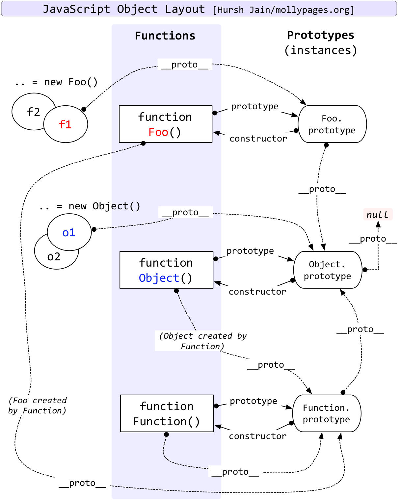
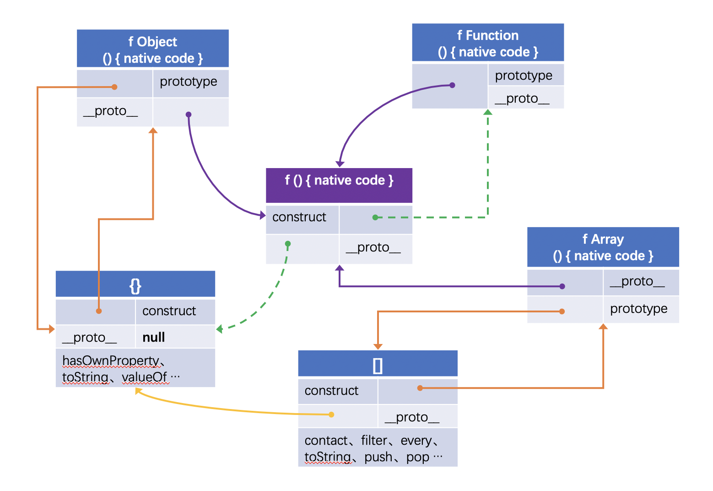

- 阅读：
图解 JavaScript 原型、原型链
参考资料：
Js 原型链
Web前端------JS原型、原型链详解
图表
经典图：
自己绘制的图：
Part 1
小测试检验js 原型链的理解：
- 1. persion1.__proto__是什么？
- 2. Persion.__proto__是什么？
- 3. Persion.prototype.__proto__是什么？
- 4. Object.__proto__是什么？
- 5. Object.prototype.__proto__是什么？
答案：
第一题：
因为persion1.__proto__ === persion1 的构造函数.prototype
因为persion1 的构造函数 === Persioon
所以persion1.__proto__ === Persion.prototype
第二题：
因为Persion.__proto__ === Persion 的构造函数.prototype
因为Persion的构造函数 === Function
所以Persion.__proto__ === Function.prototype
第三题：
因为Persion.prototype是一个普通对象，我们暂无需关心是什么对象，只要记住它是一个普通对象，
因为一个普通对象的构造函数 === Object
所以Persion.prototype.__proto__ === Object.prototype
第四题：参照第二题，因为Persion 和Object 一样都是构造函数
第五题：
Object.prototype 对象也有proto 属性，但比较特殊，为null。因为null 处于原型链的顶端。
Object.prototype.__proto__ === null
Part 2
在原型链上查找属性比较耗时，对性能有副作用，这在性能要求苛刻的情况下很重要。另外，试图访问不存在的属性时会遍历整个原型链。
hasOwnProperty 是JavaScript 中处理属性并且不会遍历原型链的方法之一。（另一种方法：Object.keys()）
prototype和 Object.getPrototypeOf的使用
function A(){}
A.prototype = {
doSomethine: function() {
// ...
}
}
var a1 = new A()
var a2 = new A()
像上面的例子中，a1.doSomethine事实上会指向Object.getPrototypeOf(a1).doSomethine，它就是
你在A.prototype.doSomething中定义的内容。
也就是说：Object.getPrototypeOf(a1).doSomething == Object.getPrototypeOf(a2).doSomethine == A.prototype.doSomething。
补充：实际上当执行a1.doSomething()相当于执行Object.getPrototypeOf(a1).doSomething.call(a1) == A.prototype.doSomething.call(a1)
简而言之，prototype 是用于类的，而Object.getPrototypeOf() 是用于实例（instance），两者功能一致。
至此，结束。